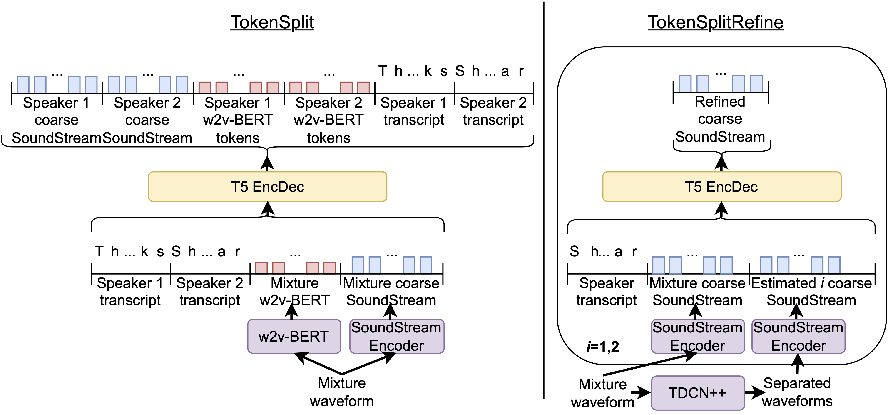

|Paper|
|Supplementary material|
Hakan Erdogan, Scott Wisdom, Xuankai Chang1*, Zalán Borsos, Marco Tagliasacchi, Neil Zeghidour, John R. Hershey
Google Research, 1Carnegie Mellon University
*Work done during an internship at Google.
We present TokenSplit, a speech separation model that acts on discrete token sequences. The model is trained on multiple tasks simultaneously: separate and transcribe each speech source, and generate speech from text. The model operates on transcripts and audio token sequences and achieves multiple tasks through masking of inputs. The model is a sequence-to-sequence encoder-decoder model that uses the Transformer architecture. We also present a "refinement" version of the model that predicts enhanced audio tokens from the audio tokens of speech separated by a conventional separation model. Using both objective metrics and subjective MUSHRA listening tests, we show that our model achieves excellent performance in terms of separation, both with or without transcript conditioning. We also measure the automatic speech recognition (ASR) performance and provide audio samples of speech synthesis to demonstrate the additional utility of our model. 
We evaluated our models using the multiple stimulus hidden reference and anchor (MUSHRA) protocol.
128 examples from the Libri2Mix test set were used, and there are 256 total examples rated since there are two sources per mixture. Each example was evaluated by 5 raters through an online interface and were required to wear headphones. We ran one listening test with variable-length audio (88 raters), and another listening test with the first 3 seconds of the same variable-length clips (97 raters). As MUSHRA anchors, we used the input mixture, the input mixture with a 15 dB boost in SNR for the target source to simulate interference reduction, and mu-law encoding with 52 levels to simulate distortion of the source. We compare the conventional TDCN++ masking-based separation model against TokenSplit and TokenSplitRefine.
| Example 1 | Example 2 | Example 3 | ||||
| Noisy Mixture | ||||||
| TDCN++ | ||||||
| TokenSplit | ||||||
| TokenSplit (Target Transcript) |
||||||
| TokenSplitRefine | ||||||
| TokenSplitRefine (Target Transcript) |
||||||
| Ground-Truth Reference | ||||||
| Source 1 | Source 2 | Source 1 | Source 2 | Source 1 | Source 2 | |
| Example 1 | Example 2 | Example 3 | ||||
| Noisy Mixture | ||||||
| TDCN++ | ||||||
| TokenSplit | ||||||
| TokenSplitRefine | ||||||
| Ground-Truth Reference | ||||||
| Source 1 | Source 2 | Source 1 | Source 2 | Source 1 | Source 2 | |
TokenSplit can be used as a text-to-speech model if all inputs except a source transcript are masked out. Note that this is a different order than the two-stage SPEAR-TTS model, which predicts semantic tokens from text, then acoustic tokens from these semantic tokens. Like SPEAR-TTS, since only the transcript is provided, TokenSplit chooses a random speaker identity. Note that the transcripts are predicted by an ASR model from the original speech, and thus have some minor errors.
| Transcript | Original speech | Generated speech | |
| "There's a ring for shift a friendly and here is a bracelet in this" | |||
| "The atmosphere is evidently charged and serves" | |||
| "Alexander pased up and down the hallway, but named them" |
Through informal listening, we found that another variant of TokenSplit performs better than the version described in our paper for TTS. This variant changes the output order of TokenSplit. Instead of predicting acoustic tokens + semantic tokens + transcripts, the model predicts transcripts + semantic tokens + acoustic tokens. This means the model first samples transcripts, then acoustic tokens conditioned on the transcripts, which encourages the acoustic tokens to better match the transcript. Here are some examples of this variant of the model, where we feed two transcripts at the input, and decode both sources' acoustic tokens. "Gen. speech" refers to speech generated by the original order of output tokens of TokenSplit, and "Variant gen. speech" refers to speech generated by the variant's order of output tokens.
| Transcript 1 | Transcript 2 | Orig. speech 1 | Orig. speech 2 | Gen. speech 1 | Gen. speech 2 | Variant gen. speech 1 | Variant gen. speech 2 | |
| "This transit spring and lighting up are beauty." | "The weather if we may use the term." | |||||||
| "We look for that reward, which I have not seen." | "It's exciting to see everything growing so fast and to get there." | |||||||
| "Familiarity is a filling capable of degree." | "I am not complaining that the rate is slow but that the sea." |